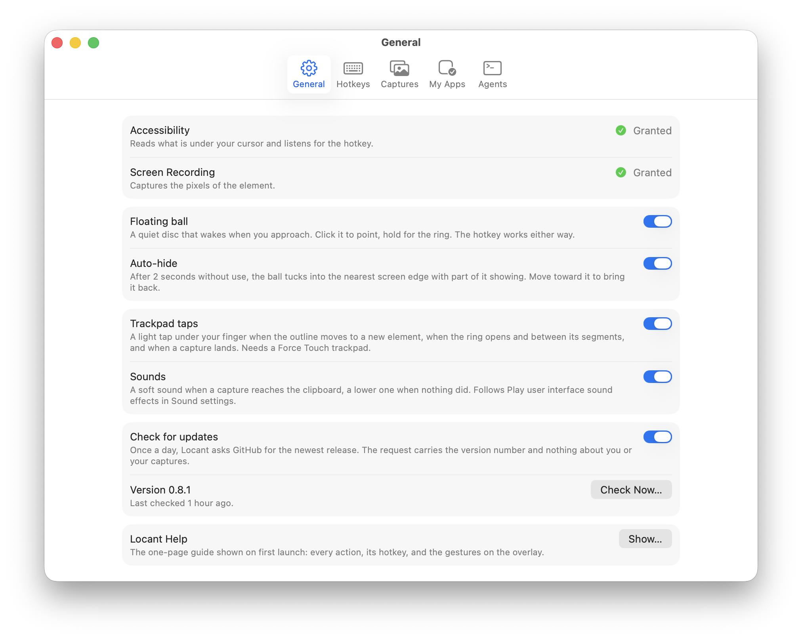
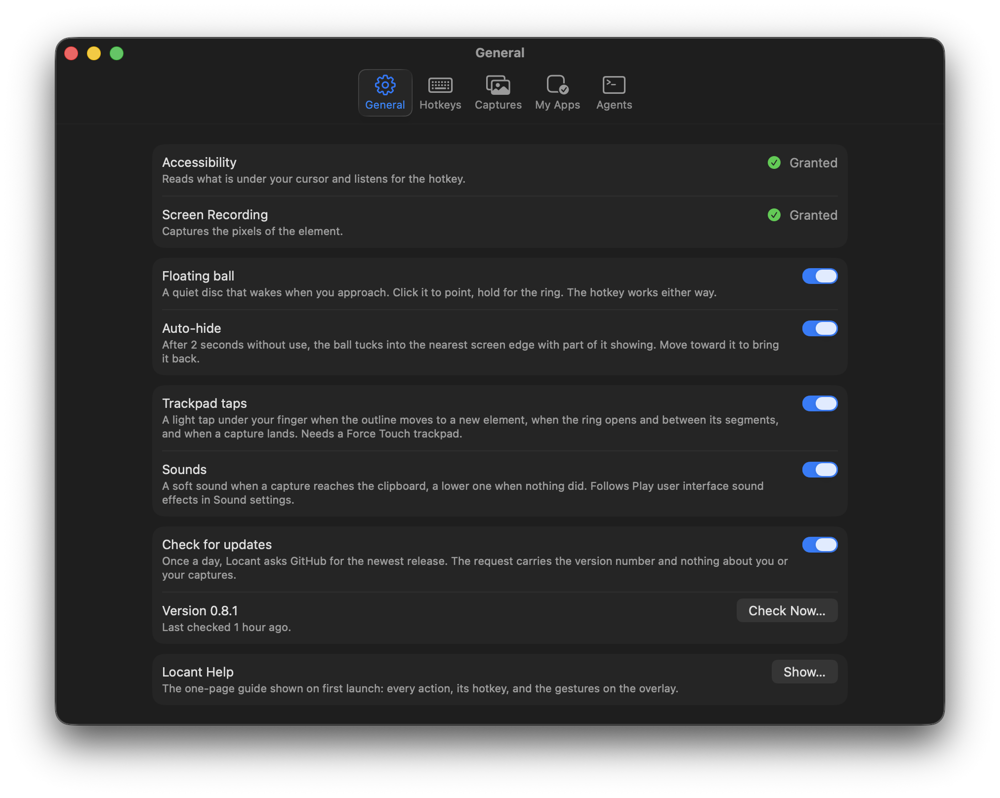

Point
Double-tap Control, or click the ball. Hover, then click the element. Hold ⇧ to add more, from any app.
Made for the Palantir Product Design Show & Tell. v0.4 in three hours, now v0.8.1. See the commits ›
Locant for Mac
Point at one element in any app. Your coding agent gets the element, not a screenshot.
Given a screenshot, the agent stopped to ask which element in 17 of 18 runs. Given a Locant capture, 0 of 12. How it was measured
macOS 15 or laterApple silicon and IntelFreeNo account
Double-tap Control, or click the ball. Hover, then click the element. Hold ⇧ to add more, from any app.
Type what should change. Enter captures. Esc cancels, nothing written.
Into Claude Code, Cursor, or Codex. The image path comes first.
The overlay over Calculator. Every frame is a real capture.

The element under the cursor and its identifier: button · Eight.

Steps to the parent: group · CalculatorKeypadView. Again for the next level.

A frame, with every element inside it listed for the agent.

Click, say what should change, Return. Esc cancels, nothing written.
A glass disc that lives at the edge of the screen and stays out of the way until you reach for it.

After two seconds without use it tucks into the nearest edge, part of it showing.

Move toward it and it comes back out. Drag it anywhere.

Under the cursor the hand appears. Click to point.

Press and hold for Snap, Text, Color, and Cut. Release on one.
Enough to find the right file on the first try.
## Locant capture (fix) Image: ~/Pictures/Locant/locant-simulator-20260913-153012-k7q2.png App: Simulator (com.example.myapp) · Window: iPhone 17 Pro Captured: 2026-09-13 15:30 · Image region: 450×130 pt @2x (element + 40 pt) ### Target element button · id=captureButton Frame: x=43 y=894 w=370 h=50 Path: application > window > group > group > button#captureButton ### Note make this rounded, match the other pills
Terminal agents get only the text on paste. The path leads, so the agent can open the PNG.
Your own apps are inferred: the Simulator, anything built on this Mac, anything signed with your Team ID.
The accessibility identifier is what the agent greps for. The path says where in the tree it sits.
A PNG and a JSON sidecar in Pictures, tagged in Finder, validating against a published schema.
Same fix, same model, same repo, same note. The only difference is what gets pasted: a ⌘⇧4 crop of the phone, or one Locant capture of the orb.

Stopped to ask which orb. Screenshot runs asked; Locant runs never did. Fisher exact p ≤ 0.002 in both conditions.
Time from paste to the edit, medians, no build then build verified. The screenshot side's time already leaves out the seconds a person spends answering. Mann–Whitney p ≤ 0.002.
Session tokens, medians. The saving is the turns spent looking and asking, not the image.
Correct edit, right file, every run. Every build in the build condition succeeded. Locant removes the one thing the agent could not know from pixels; it does not make the agent smarter.
Read the caveats. Claude Code on Opus 5 at medium effort, fresh session per run, no MCP on either side, no memory, the repo reset between runs, six pairs per condition with the order alternated. Method, raw transcripts and statistics: the report.
Locant steps down a ladder and says which rung it reached.
id=captureButtonElement with a declared identifier. The best case.
Label only. The nearest labeled neighbors are named too.
Drawn frame. Drag on the overlay; everything inside is listed.
Text and neighbors. Words in the image are recognized.
Image. The payload says so, and still carries your note.
Press and hold the ball for the ring.
A region or a window, as a PNG.
Keeps a file
Recognized lines, to the clipboard.
Keeps nothing
Hex, rgb(), hsl(), or SwiftUI Color. sRGB or Display P3.
Keeps nothing
The subject on a transparent background.
Keeps a file
After the agent's edit, run the app again. Locant finds the same element, captures it when it looks different, and keeps every iteration with the diff beneath. Show before & after is in the menu bar.
The one place Locant is a window. Every default works on first launch.


Accessibility reads what is under your cursor. Screen Recording captures the pixels. There is no third prompt.
No telemetry, no accounts. The one request is a daily check for a newer version on GitHub, and you can turn it off.
Every build is signed with a Developer ID and notarized by Apple. A dmg from GitHub, not the App Store.
No Dock icon. Idle memory under 30 MB. Nothing pulses, bounces, or waits for you to notice it.
The payload is plain Markdown, so any agent takes it on paste. Locant is also an MCP server: connect Claude Code, Cursor, or Codex in Settings › Agents, then say what should change and the agent pulls the capture itself, image included. Run end to end, as of version 0.7.2:
Hit one of these, or something not on the list? Open an issue and say which app you pointed at.
SwiftUI, AppKit, and the Simulator work well. Web pages and Electron apps carry their DOM id and classes, and the page URL; Electron builds its tree on first contact, so the first hover can lag.
Figma, games, and canvases reach the bottom of the ladder. The payload says so, and still carries the image.
It sticks to that control across its padding. Press Option to step to the parent, and again for the next level.